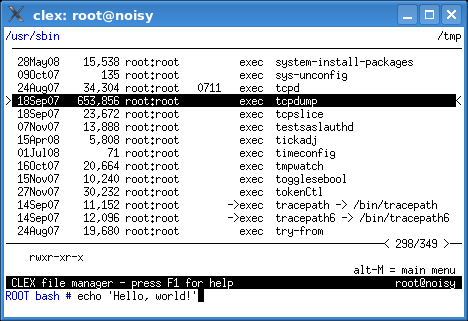

Working with the file panel is the basic operation mode. You can inspect files, change directories, create commands in the command line and execute them.

You can see two directory names on the top of the screen: the current working directory on the left and the secondary working directory on the right.
The contents of the current working directory are listed in the file panel on the screen. One file is highlighted with the cursor bar. It is called the current file. Additional information about it is displayed in the info line.
The layout of the file panel screen is configurable. The following data may be shown in the listing of files or in the info line:
-> )exec - plain file, executablesuid - executable file with set-UIDSuid - set-UID file owned by rootsgid - executable file with set-GID/DIR - directory/MNT - directory, active mount pointBdev - block deviceCdev - character deviceFIFO - FIFO (also known as named pipes)SOCK - socketspec - special file, i.e. anything else?? - type could not be determined due to
missing access rights or other error*)The number of selected files (if any) is shown in the panel frame along with the line numbers.
The command line occupies only a few lines on the screen, but it can contain many lines of text. Here you type and edit commands to be executed. The prompt is configurable.
/DIR and /MNT - CLEX will not detect mount points
if the mounted file hierarchy resides on the same device
(mount --bind on Linux).